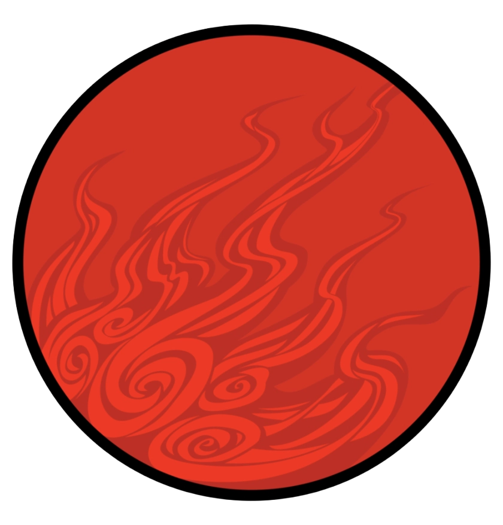
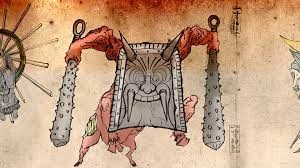
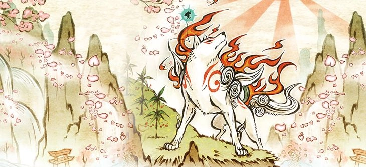
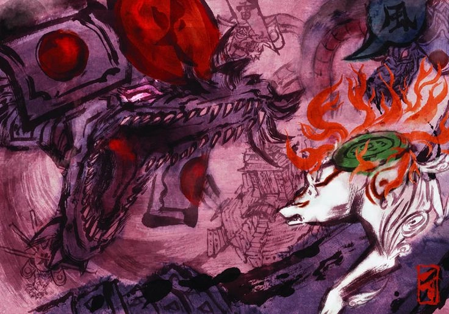
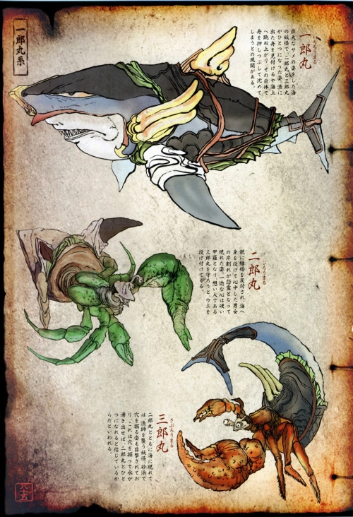
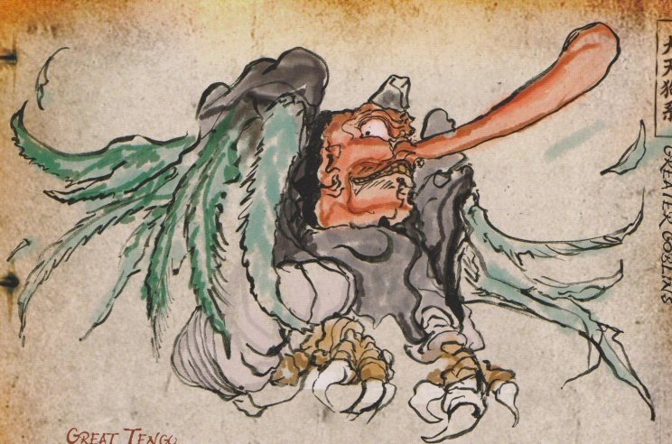

LA RIQUEZA DEL FOLCLORE

Okami es un juego que se inspira en la rica tradición del folclore y la mitología japonesa, incorporando elementos y criaturas de la cultura japonesa de manera creativa y respetuosa. Desde la diosa sol Amaterasu hasta las criaturas míticas y los elementos culturales, el juego es un tributo a la rica herencia cultural de Japón
Oni
Criaturas demoníacas con cuernos y dientes afilados.

LA INFLUENCIA DEL SHINTOÍSMO
El shintoísmo es la religión tradicional de Japón, y su influencia se puede ver en todo el juego. La diosa sol Amaterasu es una figura central en la mitología shinto, y su reencarnación en un lobo blanco es un elemento clave del juego. El juego también incorpora otros elementos shinto, como la creencia en los kami, espíritus o dioses que se cree que residen en la naturaleza.

CRIATURAS Y PERSONAJES YOKAIS
Los yokai son criaturas sobrenaturales de la mitología japonesa que aparecen en el juego. Algunos ejemplos incluyen:
Dragones
Los dragones son criaturas míticas que aparecen en la mitología japonesa. En Okami, el dragón Orochi es un enemigo poderoso.

Kappa
Criaturas acuáticas con caparazones en la espalda y un pico en la cabeza.

Tengu
Criaturas aladas con narices largas y habilidades mágicas.

ELEMENTOS CULTURALES
- Pintura y caligrafía: El juego incorpora elementos de la pintura y la caligrafía japonesa, con un estilo visual que se inspira en la tradición artística japonesa.
- Naturaleza y espiritualidad: El juego destaca la importancia de la naturaleza y la espiritualidad en la cultura japonesa, con un enfoque en la conexión entre los seres humanos y el mundo natural.
INFLUENCIAS ESPECÍFICAS
- Amaterasu: La diosa sol Amaterasu es una figura importante en la mitología japonesa. En Okami, Amaterasu es la protagonista y su diseño y habilidades están inspirados en la mitología japonesa.
- Orochi: El dragón Orochi es un monstruo legendario de la mitología japonesa que aparece en el juego como un enemigo poderoso.